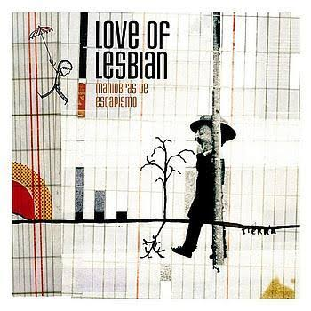

Love Of Lesbian

Es un grupo de Indie Rock en español, procedente de Barcelona.
Empiezan a tocar en otoño de 1997. El grupo esta formado por Santi Balmes (Voz, Guitarra y Teclados), Jordi Roig (Guitarra y Teclados), Julián Saldarriaga (Guitarra y Voz) y Oriol Bonet (Batería y Programación).
Discografía
Álbumes
| Portada |
Año |
|

|
2005 |
|
|
2007 |
|
|
2009 |
|
|
2012 |
|
|
2016 |
|
|
2018 |
|
|
2021 |
Últimas Presentaciones en México
Conciertos
| Flyer |
Año |

|
2016 Se presentan en el Plaza Condesa con la Gira Halley |
|
|
2018 Se presentan en el Auditorio Nacional con un sold out en su primer y hasta esta fecha única presentación en dicho recinto |
|
|
2018 En diciembre, tienen una pequeña participación en el festival Catrina en Puebla y una firma de autógrafos en el mismo evento |
|
|
2020 Realizan el primer Streaming en pandemia, exclusivo para México, presentandose en vivo desde "La casa murada" en España, teniendo como ambiente adornos alusivos al día de muertos, generando una ola de emociones entre sus fans mexicanos. |

|
En México no les fue permitido usar el Flyer original del 20 aniversario de la Banda |
|
|
Por lo que se tuvo que modificar el Flyer original, agregando un unicornio y en la presentación en México en el Auditorio Nacional usaron solo el unicornio, mientras en España y el resto de Latinoamerica usaron el Flyer original |
Love Of Lesbian en Pandemia
Como a todos la pandemia por COVID-19/Coronaviru nos tomó por sorpresa, para el ámbito musical no fue la excepción, por lo que se vió afectada la salida del actual álbum de Love Of Lesbian denominado V.E.H.N "Viaje Épico Hacia la Nada", el plan original de la banda era presentarlo y comenzar la gira en México, ya que el 80% del contenido de dicho álbum fue inspirado en México, su cultura y detalles que ellos tomaron durante unas cortas, pero merecidas vacaciones en medio de la gira del 20 aniversario en México, recorrieron varios Estados.
La gira de V.E.H.N. comenzaría en abril de 2020, sin embargo, en España, por ordenes de gobierno, fue confinada toda la población desde el mes de Marzo de 2020, prohibiéndoles salir de sus hogares (o en donde se encontraran, que no fueran lugares públicos), solo para cosas muy indispensables, por lo que todo se vió cancelado.
Love Of Lesbian, tuvieron a bien, estar activos en sus redes sociales, mientras podían salir de casa o empezar con lo planeado para el nuevo álbum, como todos residen en lugares diferentes y no se podían reunir para realizar convivencias, cada uno, desde sus perfiles personales de redes sociales, tuvieron un máximo acercamiento con los fans.
Cada semana, cada uno realizaba un live en su Instagram y tenían contacto con sus fans.
Santi Balmes, realizaba lecturas de poesía, creó un email especial para que los fans le enviaran poemas que les gustarían que leyera y él los seleccionaba y daba lectura en vivo.
Oriol Bonet, con su fino gusto culinario, compartío sus mejores recetas, con la ayuda de su esposa, quién fungía como camarógrafa y permitiendo de alguna forma, la entrada de los fans hasta su cocina, durante semanas, cocinó en vivo y compartió exquisitas recetas.
Jordi Roig, siendo el más tímido del grupo, fue quién revolucionó por completo los lives y quien tuvo aún mayor acercamiento con los fans, ya que en sus lives, permitía que los fans se conectaran con él y tenía breves pláticas con los emocionados fans que se conectaban de todo el mundo, esperando interactuar con él, sin duda alguna, mostró un lado sensible, emocional y muy divertido que no se conocía en él.
Julián Saldarriaga, por su parte, con su exquisito gusto musical, en sus lives era el DJ, con la compañía de una copa de vino, ponía las mejores mezclas musicales que compartía con los fans, se le podía ver disfrutando de la música, bailando y cantando ocasionalmente.
Realmente la pandemia sirvió para que los fans conocieran una faceta de sus ídolos que no conocían, fuera de luces, cantos, escenarios, abrieron la intimidad de sus hogares, platicaron, convivieron y se acercaron mucho más a los fans de todo el mundo, incluso, la canción "Nadie por las calles", en algún momento fue considerada casi himno a la pandemia.
En cierto momento, cuando la pandemia estaba en un momento crítico a nivel mundial y cuando practicamente todo el mundo nos encontrabamos en confinamiento, hicieron un llamado a los fans para que les enviaran vídeos, con especificaciones de tiempo, ángulos, tomas, etc., estos vídeos posteriormente fueron integrados y utlizados en los vídeos oficiales de algunas canciones de V.E.H.N., que sin duda alguna, estas canciones y estos vídeos dejarán la huella de uno de los momentos mas sensibles que pasó la humanidad.
En España, experimentaron realizar "Conciertos seguros", para este año 2021, para demostrar que teniendo precaciones adecuadas, se puede acudir a conciertos, sin que exista peligro de contagio del mortal virus, Love Of Lesbian, fue la banda que se atrevió a realizar este experimento, en un recinto con 5,000 asistentes, los cuales fueron monitoreados antes, durante y después del concierto, arrojando un mes después, que no hubo contagios en el recinto, que si bien se detectaron 6 personas contagiadas, sin embargo, no se les permitió el ingreso y no hubo mas contagios, abriendo Love Of Lesbian, la puerta para que se puedan volver a retomar los conciertos en esta nueva normalidad en España.